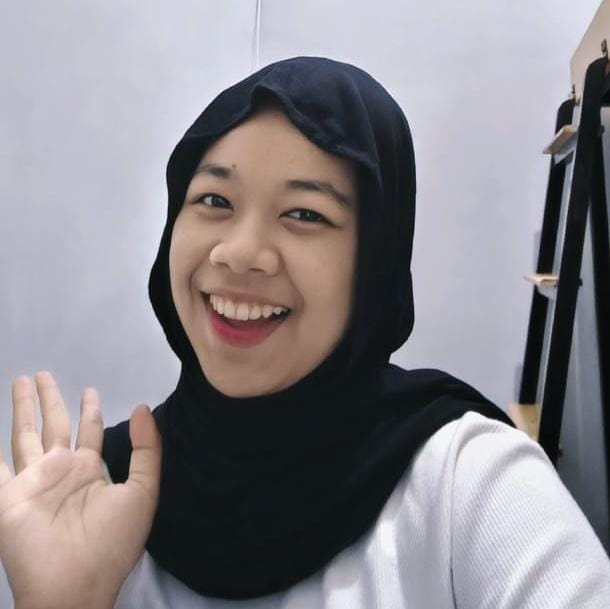

My approach
Belajar dengan praktik, memecah masalah menjadi bagian kecil, lalu membangun solusi secara bertahap.
INFORMATICS STUDENT · MALANG, INDONESIA
Halo, aku Alifia. Aku tertarik pada pengembangan perangkat lunak, teknologi, dan visual storytelling. Aku suka mengubah ide menjadi pengalaman digital yang berguna dan mudah digunakan.

01 / A LITTLE INTRODUCTION
Aku percaya teknologi yang baik bukan hanya soal fitur yang berjalan, tetapi juga tentang bagaimana teknologi membantu orang menyelesaikan masalah.
Saat ini aku menempuh studi Informatika di Universitas Muhammadiyah Malang. Dalam proses belajar, aku mengeksplorasi pengembangan aplikasi web dan mobile, pemrograman berorientasi objek, database, serta sistem berbasis IoT.
Di luar coding, fotografi membantuku memperhatikan detail, komposisi, dan cara menyampaikan cerita melalui visual.
Get to know me ↗Belajar dengan praktik, memecah masalah menjadi bagian kecil, lalu membangun solusi secara bertahap.
Clean structure, meaningful features, teamwork, dan kemauan untuk terus berkembang.
Menikmati fotografi, mencari inspirasi visual, dan mengamati hal-hal kecil di sekitar.
02 / TOOLKIT
Tools yang sedang aku gunakan dan pelajari dalam perjalanan pengembangan software.
Fondasi logika dan pemecahan masalah.
Membangun antarmuka web yang responsif.
Eksplorasi aplikasi mobile dan layanan data.
Menghubungkan data, perangkat, dan aplikasi.
Tools untuk coding dan kolaborasi proyek.
Melatih kepekaan visual dan penyampaian cerita.
03 / SELECTED WORK
Beberapa proyek pembelajaran dan eksplorasi. Detail serta tautan dapat kamu sesuaikan dengan repository aslimu.
Aplikasi mobile bertema perawatan hewan peliharaan, dikembangkan dengan React Native dan Expo sebagai proyek pembelajaran.
View repository ↗Eksplorasi katalog anime dengan pencarian, filter kategori, dan pengambilan data dari public API.
View repository ↗Prototipe pemantauan sensor menggunakan ESP32, sensor gerak dan cahaya, serta pengiriman data ke database.
View repository ↗Konsep aplikasi layanan barang hilang dan ditemukan di lingkungan kampus dengan antarmuka desktop.
View repository ↗Hubungkan username GitHub untuk menampilkan repository publik secara otomatis.
GitHub username belum diatur.
Visit GitHub ↗04 / THE JOURNEY
Perjalanan akademik dan pengalaman belajar yang membentuk cara berpikir serta keterampilan teknisku.
Informatika
Belajar dasar ilmu komputer, rekayasa perangkat lunak, pengembangan web dan mobile, serta sistem cerdas.
Projects, labs & coursework
Mengembangkan pemahaman melalui praktikum, eksplorasi teknologi, dan proyek berbasis studi kasus.
Requirement analysis, clean code, testing, dan kualitas perangkat lunak.
Eksplorasi pengolahan data dan evaluasi model machine learning.
Komunikasi perangkat, protokol, dan keamanan sistem terhubung.
05 / MILESTONES
Tambahkan sertifikat, penghargaan, organisasi, atau pengalaman relevan yang benar-benar kamu miliki.
Belum ada sertifikat yang ditampilkan. Kamu bisa menambahkan nama program, penyelenggara, tahun, dan tautan bukti.
Tambahkan pengalaman organisasi, kepanitiaan, kolaborasi tim, atau kontribusi komunitas.
Ruang untuk menampilkan karya fotografi dan proyek visual sebagai sisi kreatif di luar coding.
06 / LET'S CONNECT
Terbuka untuk diskusi, kolaborasi proyek, dan kesempatan belajar bersama.